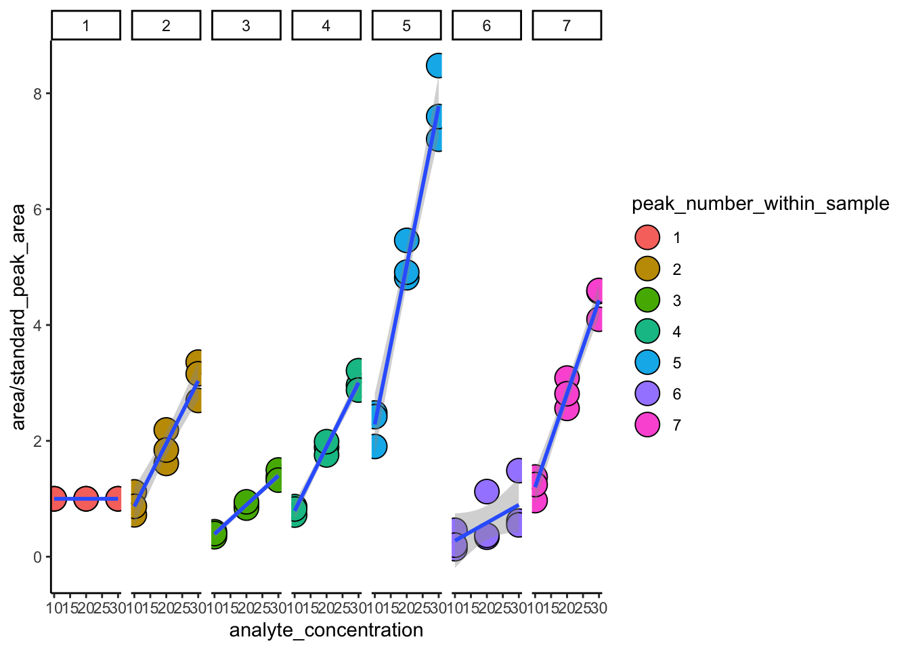

Chapter 3 Analyzing chromatography data with phylochemistry
One of the central features of phylochemsitry is its chromatogram processing tools.
3.1 Preparing the raw data and metadata
To use the phylochemistry chromatogram processing tools, we need two things: (i) a list of the samples we want to analyze (a monolist, metadata), and (ii) a singel file that contains their chromatograms (a .csv file, raw data). Here is how you get each of those things:
The first step is to export .CDF files from the chromatographic analysis system. These can then be converted into the ubiquitous .csv file format using the function convertCDFstoCSVs. This can take a while, but it only needs to be done once.
phylochem_analysis_directory_path = "/Users/lucasbusta/Desktop/phylochemistry_example_data/"
GCMS_data_directory_contents <- dir(paste0(phylochem_analysis_directory_path, "raw_data/GCMS_data/"))
head(GCMS_data_directory_contents)## [1] "10_10_1.CDF" "10_10_1.CDF.csv" "10_10_2.CDF" "10_10_2.CDF.csv"
## [5] "10_10_3.CDF" "10_10_3.CDF.csv"CDFs <- dir(paste0(phylochem_analysis_directory_path, "raw_data/GCMS_data/"))[grep(".CDF$", GCMS_data_directory_contents)]
head(CDFs)## [1] "10_10_1.CDF" "10_10_2.CDF" "10_10_3.CDF" "10_20_1.CDF" "10_20_2.CDF"
## [6] "10_20_3.CDF"paths_to_cdfs <- paste0(phylochem_analysis_directory_path, "raw_data/GCMS_data/", CDFs)
head(paths_to_cdfs)## [1] "/Users/lucasbusta/Desktop/phylochemistry_example_data/raw_data/GCMS_data/10_10_1.CDF"
## [2] "/Users/lucasbusta/Desktop/phylochemistry_example_data/raw_data/GCMS_data/10_10_2.CDF"
## [3] "/Users/lucasbusta/Desktop/phylochemistry_example_data/raw_data/GCMS_data/10_10_3.CDF"
## [4] "/Users/lucasbusta/Desktop/phylochemistry_example_data/raw_data/GCMS_data/10_20_1.CDF"
## [5] "/Users/lucasbusta/Desktop/phylochemistry_example_data/raw_data/GCMS_data/10_20_2.CDF"
## [6] "/Users/lucasbusta/Desktop/phylochemistry_example_data/raw_data/GCMS_data/10_20_3.CDF"## Reading data file /Users/lucasbusta/Desktop/phylochemistry_example_data/raw_data/GCMS_data/10_10_1.CDF## Warning in fun(libname, pkgname): mzR has been built against a different Rcpp version (1.0.0)
## than is installed on your system (1.0.3). This might lead to errors
## when loading mzR. If you encounter such issues, please send a report,
## including the output of sessionInfo() to the Bioc support forum at
## https://support.bioconductor.org/. For details see also
## https://github.com/sneumann/mzR/wiki/mzR-Rcpp-compiler-linker-issue.## Error in R_nc4_close: NetCDF: Not a valid ID
## Framing data file...
## Merging duplicate rows ...
## Filling in blank m/z values ...
## Filtering by retention time thresholds ...
## Writing out data file as CSV...
## Reading data file /Users/lucasbusta/Desktop/phylochemistry_example_data/raw_data/GCMS_data/10_10_2.CDF
## Error in R_nc4_close: NetCDF: Not a valid ID
## Framing data file...
## Merging duplicate rows ...
## Filling in blank m/z values ...
## Filtering by retention time thresholds ...
## Writing out data file as CSV...
## Reading data file /Users/lucasbusta/Desktop/phylochemistry_example_data/raw_data/GCMS_data/10_10_3.CDF
## Error in R_nc4_close: NetCDF: Not a valid ID
## Framing data file...
## Merging duplicate rows ...
## Filling in blank m/z values ...
## Filtering by retention time thresholds ...
## Writing out data file as CSV...
## Reading data file /Users/lucasbusta/Desktop/phylochemistry_example_data/raw_data/GCMS_data/10_20_1.CDF
## Error in R_nc4_close: NetCDF: Not a valid ID
## Framing data file...
## Merging duplicate rows ...
## Filling in blank m/z values ...
## Filtering by retention time thresholds ...
## Writing out data file as CSV...
## Reading data file /Users/lucasbusta/Desktop/phylochemistry_example_data/raw_data/GCMS_data/10_20_2.CDF
## Error in R_nc4_close: NetCDF: Not a valid ID
## Framing data file...
## Merging duplicate rows ...
## Filling in blank m/z values ...
## Filtering by retention time thresholds ...
## Writing out data file as CSV...
## Reading data file /Users/lucasbusta/Desktop/phylochemistry_example_data/raw_data/GCMS_data/10_20_3.CDF
## Error in R_nc4_close: NetCDF: Not a valid ID
## Framing data file...
## Merging duplicate rows ...
## Filling in blank m/z values ...
## Filtering by retention time thresholds ...
## Writing out data file as CSV...
## Reading data file /Users/lucasbusta/Desktop/phylochemistry_example_data/raw_data/GCMS_data/10_30_1.CDF
## Error in R_nc4_close: NetCDF: Not a valid ID
## Framing data file...
## Merging duplicate rows ...
## Filling in blank m/z values ...
## Filtering by retention time thresholds ...
## Writing out data file as CSV...
## Reading data file /Users/lucasbusta/Desktop/phylochemistry_example_data/raw_data/GCMS_data/10_30_2.CDF
## Error in R_nc4_close: NetCDF: Not a valid ID
## Framing data file...
## Merging duplicate rows ...
## Filling in blank m/z values ...
## Filtering by retention time thresholds ...
## Writing out data file as CSV...
## Reading data file /Users/lucasbusta/Desktop/phylochemistry_example_data/raw_data/GCMS_data/10_30_3.CDF
## Error in R_nc4_close: NetCDF: Not a valid ID
## Framing data file...
## Merging duplicate rows ...
## Filling in blank m/z values ...
## Filtering by retention time thresholds ...
## Writing out data file as CSV...Once this is done, we need to create a monolist of the cdf_csvs. If you are keeping a good digital lab notebook, then you should have a list of all your samples. So, you can just modify this list. The monolist can contain any and all column you want, but it needs to include the following columns: “rt_offset”, “baseline_window”, and “path_to_cdf_csv”. “rt_offset” should initially be 0 for all samples. “baseline_window” should initially be 100 for all samples. “path_to_cdf_csv” should be a path stating where the cdf_csv file for that sample is. Here is an example:
experiment <- list()
experiment$GCMS_samples$sample_data <- readMonolist(monolist_in_path = "/Users/lucasbusta/Desktop/phylochemistry_example_data/monolists/GCMS_samples.csv")
head(experiment$GCMS_samples$sample_data)## # A tibble: 6 x 4
## sample_name amount_internal_std_in_… amount_mixed_analyte_std_… replicate
## <chr> <int> <int> <int>
## 1 10_10_1 10 10 1
## 2 10_10_2 10 10 2
## 3 10_10_3 10 10 3
## 4 10_20_1 10 20 1
## 5 10_20_2 10 20 2
## 6 10_20_3 10 20 3experiment$GCMS_samples$sample_data$rt_offset <- 0
experiment$GCMS_samples$sample_data$baseline_window <- 100
experiment$GCMS_samples$sample_data$path_to_cdf_csv <- NA
experiment$GCMS_samples$sample_data$path_to_cdf_csv <- paste0(paths_to_cdfs[match(experiment$GCMS_samples$sample_data$sample_name, gsub(".CDF", "", gsub(".*raw_data/GCMS_data/", "", paths_to_cdfs)))], ".csv")
head(experiment$GCMS_samples$sample_data)## # A tibble: 6 x 7
## sample_name amount_internal… amount_mixed_an… replicate rt_offset
## <chr> <int> <int> <int> <dbl>
## 1 10_10_1 10 10 1 0
## 2 10_10_2 10 10 2 0
## 3 10_10_3 10 10 3 0
## 4 10_20_1 10 20 1 0
## 5 10_20_2 10 20 2 0
## 6 10_20_3 10 20 3 0
## # … with 2 more variables: baseline_window <dbl>, path_to_cdf_csv <chr>We can now extract total ion chromatograms from the .csv files we just created. Since this can also take a while if there are lots of files, it’s best to write these chromatograms to a new .csv so that we only have to do this extraction once.
## Reading data file /Users/lucasbusta/Desktop/phylochemistry_example_data/raw_data/GCMS_data/10_10_1.CDF.csv
## Extracting the total ion chromatogram...
## Appending chromatogram to list...
## Reading data file /Users/lucasbusta/Desktop/phylochemistry_example_data/raw_data/GCMS_data/10_10_2.CDF.csv
## Extracting the total ion chromatogram...
## Appending chromatogram to list...
## Reading data file /Users/lucasbusta/Desktop/phylochemistry_example_data/raw_data/GCMS_data/10_10_3.CDF.csv
## Extracting the total ion chromatogram...
## Appending chromatogram to list...
## Reading data file /Users/lucasbusta/Desktop/phylochemistry_example_data/raw_data/GCMS_data/10_20_1.CDF.csv
## Extracting the total ion chromatogram...
## Appending chromatogram to list...
## Reading data file /Users/lucasbusta/Desktop/phylochemistry_example_data/raw_data/GCMS_data/10_20_2.CDF.csv
## Extracting the total ion chromatogram...
## Appending chromatogram to list...
## Reading data file /Users/lucasbusta/Desktop/phylochemistry_example_data/raw_data/GCMS_data/10_20_3.CDF.csv
## Extracting the total ion chromatogram...
## Appending chromatogram to list...
## Reading data file /Users/lucasbusta/Desktop/phylochemistry_example_data/raw_data/GCMS_data/10_30_1.CDF.csv
## Extracting the total ion chromatogram...
## Appending chromatogram to list...
## Reading data file /Users/lucasbusta/Desktop/phylochemistry_example_data/raw_data/GCMS_data/10_30_2.CDF.csv
## Extracting the total ion chromatogram...
## Appending chromatogram to list...
## Reading data file /Users/lucasbusta/Desktop/phylochemistry_example_data/raw_data/GCMS_data/10_30_3.CDF.csv
## Extracting the total ion chromatogram...
## Appending chromatogram to list...3.2 Using the phylochemistry integrationApp
Once the raw data has been processed, we should have two things: (i) a list of the samples we want to process (a monolist), (ii) a .csv file that contains the chromatograms that correspond to those samples, as created by the extractChromatogramsFromCSVs() function. We are now ready to look at and analyze the chromatograms with the phylochemistry integration app. Let’s load the app with the integrationApp function.
# phylochemistry::integrationApp(
# chromatograms = read.table(file = paste0(phylochem_analysis_directory_path, "raw_data/GCMS_data/chromatograms.csv"), sep = ",", header = TRUE),
# x_axis_start = 300,
# x_axis_end = 800,
# samples_monolist_path = paste0(phylochem_analysis_directory_path, "monolists/GCMS_samples_updated.csv"),
# create_new_samples_monolist = FALSE,
# samples_monolist_subset = c(1:9),
# peaks_monolist_path = paste0(phylochem_analysis_directory_path, "monolists/peak_list.csv"),
# create_new_peak_monolist = TRUE,
# zoom_and_scroll_rate = 50
# )Based on this initial look, we can see that there is a retention time issue with samples 10_10_1 and 10_10_2. We can fix this using the the rt_offset line in the samples_monolist:
experiment$GCMS_samples$sample_data$rt_offset[experiment$GCMS_samples$sample_data$sample_name %in% c("10_10_1", "10_10_2")] <- -12
writeMonolist(monolist = experiment$GCMS_samples$sample_data, monolist_out_path = paste0(phylochem_analysis_directory_path, "monolists/GCMS_samples_updated.csv"))Now let’s reload the app:
# phylochemistry::integrationApp(
# chromatograms = read.table(file = paste0(phylochem_analysis_directory_path, "raw_data/GCMS_data/chromatograms.csv"), sep = ",", header = TRUE),
# x_axis_start = 300,
# x_axis_end = 800,
# samples_monolist_path = paste0(phylochem_analysis_directory_path, "monolists/GCMS_samples_updated.csv"),
# create_new_samples_monolist = FALSE,
# samples_monolist_subset = c(1:9),
# peaks_monolist_path = paste0(phylochem_analysis_directory_path, "monolists/peak_list_example.csv"),
# create_new_peak_monolist = FALSE,
# zoom_and_scroll_rate = 50
# )Once we’ve added those peaks, we can see the peak list by importing the monolist:
experiment$GCMS_samples$peaklist <- readMonolist(monolist_in_path = paste0(phylochem_analysis_directory_path, "monolists/peak_list_example.csv"))
head(experiment$GCMS_samples$peaklist)## # A tibble: 6 x 8
## peak_start peak_end path_to_cdf_csv area peak_number_wit… rt_offset
## <dbl> <dbl> <chr> <dbl> <int> <int>
## 1 434. 451. /Users/lucasbu… 2.12e6 1 -12
## 2 531. 540. /Users/lucasbu… 1.53e6 2 -12
## 3 576. 585. /Users/lucasbu… 7.32e5 3 -12
## 4 592. 601. /Users/lucasbu… 1.53e6 4 -12
## 5 619. 636. /Users/lucasbu… 4.04e6 5 -12
## 6 652. 661. /Users/lucasbu… 2.92e5 6 -12
## # … with 2 more variables: peak_start_rt_offset <dbl>,
## # peak_end_rt_offset <dbl>Looks good! Let’s merge the peaklist and the some of the experiment$GCMS_samples$sample_data info:
experiment$GCMS_samples$peaklist$sample_name <- experiment$GCMS_samples$sample_data$sample_name[match(experiment$GCMS_samples$peaklist$path_to_cdf_csv, experiment$GCMS_samples$sample_data$path_to_cdf_csv)]
str(experiment$GCMS_samples$peaklist, strict.width = "cut")## 'data.frame': 63 obs. of 9 variables:
## $ peak_start : num 434 531 576 592 619 ...
## $ peak_end : num 451 540 585 601 636 ...
## $ path_to_cdf_csv : chr "/Users/lucasbusta/Desktop/phylochemi"..
## $ area : num 2123645 1534756 732258 1525852 4041706..
## $ peak_number_within_sample: int 1 2 3 4 5 6 7 1 2 3 ...
## $ rt_offset : int -12 -12 -12 -12 -12 -12 -12 -12 -12 -1..
## $ peak_start_rt_offset : num 422 519 564 580 607 ...
## $ peak_end_rt_offset : num 439 528 573 589 624 ...
## $ sample_name : chr "10_10_1" "10_10_1" "10_10_1" "10_10_"..Let’s normalize to the first peak, which is the internal standard:
standard_areas <- plyr::ddply(experiment$GCMS_samples$peaklist, .(path_to_cdf_csv), summarize, standard_peak_area = area[peak_number_within_sample == 1])
experiment$GCMS_samples$peaklist$standard_peak_area <- standard_areas$standard_peak_area[match(experiment$GCMS_samples$peaklist$path_to_cdf_csv, standard_areas$path_to_cdf_csv)]
str(experiment$GCMS_samples$peaklist, strict.width = "cut")## 'data.frame': 63 obs. of 10 variables:
## $ peak_start : num 434 531 576 592 619 ...
## $ peak_end : num 451 540 585 601 636 ...
## $ path_to_cdf_csv : chr "/Users/lucasbusta/Desktop/phylochemi"..
## $ area : num 2123645 1534756 732258 1525852 4041706..
## $ peak_number_within_sample: int 1 2 3 4 5 6 7 1 2 3 ...
## $ rt_offset : int -12 -12 -12 -12 -12 -12 -12 -12 -12 -1..
## $ peak_start_rt_offset : num 422 519 564 580 607 ...
## $ peak_end_rt_offset : num 439 528 573 589 624 ...
## $ sample_name : chr "10_10_1" "10_10_1" "10_10_1" "10_10_"..
## $ standard_peak_area : num 2123645 2123645 2123645 2123645 212364..Now we can do some plotting:
experiment$GCMS_samples$peaklist$sample_type <- substr(experiment$GCMS_samples$peaklist$sample_name, 0, 5)
experiment$GCMS_samples$peaklist$analyte_concentration <- as.numeric(as.character(substr(experiment$GCMS_samples$peaklist$sample_type, 4, 5)))
experiment$GCMS_samples$peaklist$peak_number_within_sample <- factor(experiment$GCMS_samples$peaklist$peak_number_within_sample, levels = unique(experiment$GCMS_samples$peaklist$peak_number_within_sample))
library(ggplot2)
ggplot() +
geom_point(
data = experiment$GCMS_samples$peaklist,
aes(x = analyte_concentration, y = area/standard_peak_area, fill = peak_number_within_sample),
shape = 21, size = 6
) +
geom_smooth(
data = experiment$GCMS_samples$peaklist,
aes(x = analyte_concentration, y = area/standard_peak_area),
method = "lm"
) +
facet_grid(.~peak_number_within_sample) +
theme_classic()